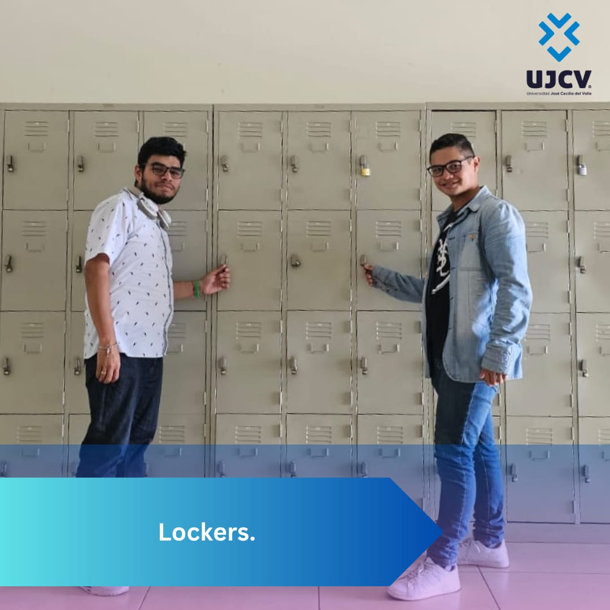
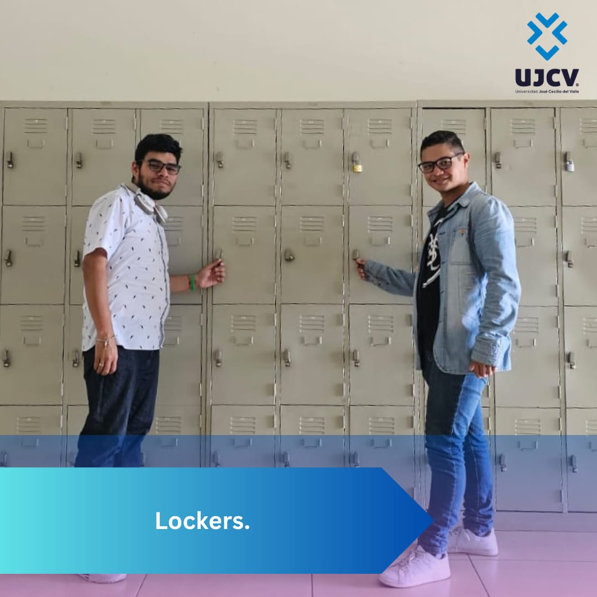

Como un Servicio Complementario la UJCV pone a disposición de toda la Comunidad Estudiantil el Alquiler de Casilleros para el depósito de materiales o pertenencias personales, se ofrecen de dos tamaños, con las siguientes especificaciones:
- Grande: 35 Pulgadas de Alto X 14 Pulgadas de Ancho a un precio de L. 120.00 por cada período académico
- Pequeño: 17 Pulgadas de Alto X 11 Pulgadas de Ancho a un precio de L. 100.00 por cada período académico
- Abocarse al Departamento de Contabilidad en el Edificio Administrativo de la UJCV
- Leer políticas de uso
- Llenar formulario
- Pagar